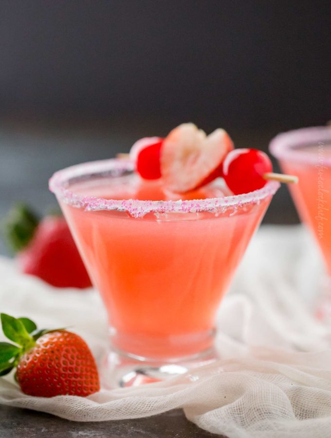

Aphrodite's Love Juice

Description
A delicious cocktail to wet you (or yours) appetite for things to come
Aphrodite's - the goddess of Love sure knew how to have a fun time. We've
scoured ancient Greek texts and procured this recipe for you. Now set forth
and hone your mixology skills so you may raise your carnal spirits in the safety
of your hovel.
Ingredients
- 1.5oz vodka
- 1oz perach schnapps
- 3oz ruby red grapefruit juice
- 1oz raspberry juice
Steps
- Rim cocktail glass with sugar. Set aside.
- Add ice and ingredients to cocktail shaker. Cap the shaker and gently
shake (not stir) ingredients together.
- Pour cooled mixture (sans ice) into prepared glass. Garnish with
maraschino cherries and sliced strawberry.
Home - Odin Recipes